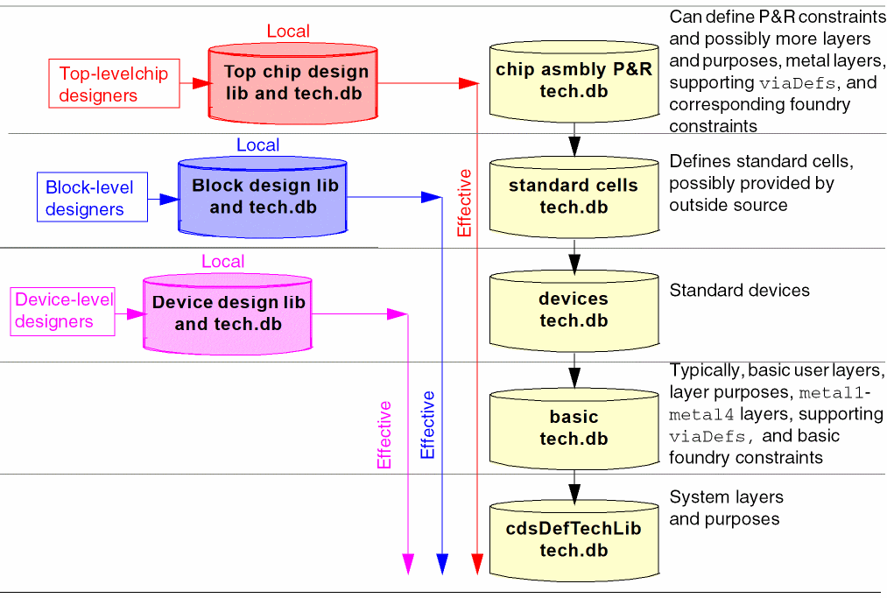

1
About Virtuoso Technology Data
Virtuoso® technology databases define the process data used throughout a design flow: layer definitions, layer attributes, design constraints, site definitions, via definitions, via specifications, and device definitions—all of the information that defines the framework for creating designs. Most Virtuoso design technology data is initially defined in ASCII technology files which are compiled into technology databases, or libraries. These technology databases can then be set up as incremental technology databases.
Incremental Technology Databases
The Virtuoso incremental technology database structure enables applications to combine technology data from different sources by establishing references between databases. A database inherits the technology data from any databases it references. A chain of references, called a graph, creates an effective technology database that is a combination of the technology data in all of the databases, as illustrated below. Multiple references in a technology database are ordered: The order in which they are listed in the referencing technology database dictates the order in which applications traverse the graph to find technology data.
The ability to establish references among technology databases allows the incremental inclusion of technology databases as needed by various applications throughout the design process. Technology databases can be supplied by multiple sources (for example, the foundry, IP provider, and designer) and can be tailored to meet the requirements of different tasks in the design flow (for example, device-level design as opposed to top-level interconnect creation). Avoiding the limitations placed on design teams when a single read-only technology database is supplied, this structure provides flexibility by allowing designers to
- reference and use only the technology data required for a specific task in the design flow, and
- define their own data in a writable technology database in which they set up references to any predefined read-only technology databases they need
A design library or an application can reference any technology database whose entry point in a graph provides only the technology data it needs.This technology database is the local technology database for that design library. The complete graph of databases initially referenced by the local database is the effective technology database. For example, in the following simple graph, in which the technology databases contain data grouped by type,
-
The design library used by device-level designers can reference the
Devicesdatabase, makingDevicesits local database. This entry point provides the reference chain (graph) containing all of the technology data required for device-level design and none of the data required by tasks later in the design flow (for example, the standard cells database, with data needed for block-level design but not for device-level design). -
The design library or application used for block-level design can reference the
standard cellsdatabase, which is then its local database. This entry point provides the graph containing all of the technology data required for block-design and none of the data required by tasks later in the design flow. -
The design library or application used for chip assembly place and route can reference the
Routertechnology database, its local database, which contains specific technology data required for place and route and, again, provides the complete graph of data required for this task.

Simple Incremental Technology Database Structures
Incremental technology database graphs can be as simple or as elaborate as required.
The simplest but least flexible is to specify all technology data in a single technology database.
Creation of any technology database automatically creates a reference to the Cadence default technology database, cdsDefTechLib. This default technology library defines all system-reserved layers and purposes. If system-reserved layers and purposes are in the compiled technology file, they are removed; defining them in two databases constitutes a conflict.
cdsDefTechLib must be installed in the standard Design Framework II hierarchy. Failure to install cdsDefTechLib in this manner will result in missing layer and purposes in the technology databases.
Additionally, cdsDefTechLib specifies layer-purpose pair priorities and techDisplays settings, as well as assigning the substrate layer function. This data can be redefined in the referencing technology database, which overrides the definitions in cdsDefTechLib. For example, you can
- define other layer-purpose pairs
- redefine layer-purpose pair priorities
-
specify different
techDisplaysfor layer-purpose pairs to change how they are displayed
A technology database automatically inherits the layer-purpose pair priorities defined in cdsDefTechLib unless they are redefined higher in the graph. When inherited from cdsDefTechLib, the priorities are appended to the layer-purpose pair priority list specified in the technology database for user-defined layer-purpose pairs. When priorities are redefined, they are inherited based on the graph
The following simple illustration shows how layer-purpose pair priorities work in a graph:
The ability to redefine layer-purpose priorities in this way allows you to include lower-level layer-purpose pairs higher in the priority list.
You can redefine the way layer-purpose pairs are displayed in the same manner, by redefining their techDisplays entries in any technology database. By default, a technology database inherits techDisplays definitions based on the graph precedence search order. Any redefinition overrides the definition in a lower technology database.
When designers are provided with established, read-only technology databases, they can create their own local technology database in which to define their own technology data and establish a reference to the read-only technology databases. For example, in this graph, the designer’s local technology database can reference the Router technology database, as shown below, or any other entry point that provides the data that is required for the designer’s task. Multiple local technology databases can be created and added to the graph as needed to be used by designers at different entry points in the graph.
User-defined Reserved Layers
Earlier, on the DFII, there are certain reserved layers defined in cdsDefTechLib. Users don’t need to specify these layers, since these layers automatically gets entered in the memory once the database gets read in. In addition, the technology file database saved by the user does not have the information for those system reserved layers.
For example, <text 230> is a system reserved layer. This layer will automatically gets entered in the technology file database once the database gets read in. However, when the user exits the program, there is no such layer information in the saved database. Therefore, the user is unable find the text layer.
Now, a user can also define reserved layers in the database. If the user specifically defines the layers with correct layer name and layer number, DFII will consider them as user-defined reserved layers. For these layers, the technology file database always saves the layer information, even after the user quits the DFII environment.
Therefore, if the user defines such layer with the name, text and number, 230 either through the ASCII technology file or through SKILL API techCreateLayer, then this layer will be treated as a user-defined reserved layer. In addition, this layer’s information can be found in the database even after the user quits the DFII environment.
Providing Like Data for Different Design Purposes
The following sample graph is designed to provide the data required for a 6-metal process and for a 7-metal process:
Multiple Design Libraries Using Incremental Technology Databases
The following example illustrates a complex incremental technology database graph. The graph provides multiple entry points, designed to supply each design library with the data it needs without burdening it with data that it does not use but that is required by other design libraries setting references higher in the graph. It also allows defining technology data required by more than one design library only once in a technology database that can be shared.
The Top-Level Chip design library extends itself by referencing the IP design library, IOPadLib. All require the 6-metal technology database. Also, the design library can instantiate devices from both of the other design libraries it references.
The Digital Block 1 design library extends itself by referencing the IP design library, Memory block. Digital Block 1 requires the LEFDefaultRouteSpec constraint group, non-default constraint groups, and standard via definitions for generated vias defined in the 6-mtl P&R rules technology database, which also requires the same 6-metal technology database that is in the effective graphs for the Top-Level Chip design libraries. Additionally, this design library uses site definitions defined in the technology database, standard cells A.
The Digital Block 2&3 design library also uses the 6-mtl P&R rules technology database used by the Digital Block 1 design library; however, it uses a different set of site definitions defined in the technology database, standard cells B. It, too, references the IP design library, Memory block.
Technology databases supporting a 7-metal process, although not used by the designs in this graph, are available for 7-metal process designs when needed. The 7-mtl P&R rules technology database contains the LEFDefaultRouteSpec constraint group, non-default constraint groups, and standard via definitions for generated vias needed for a 7-metal process. The 7-metal technology database provides the layers, via, and foundry constraints required by 7-metal processes in addition to the shared base data.
Designing Incremental Technology Database Graphs
Determining how to structure your technology databases depends primarily upon your design processes and what technology data you must use and cannot change, such as constraints defined and used by your foundry. Technology data should be grouped optimally for your design flow and for the most efficient access and use by the applications you employ. As you define a graph, it is important to
- Ensure that the data required by any database is provided by a database it references.
- Ensure that the order in which software will look through the databases is correct for your purposes.
- Consider where each task in your design flow will enter the graph, and add technology data specific to that task at that entry point. This ensures that only relevant technology data is seen during any design task.
- Avoid defining conflicting data in multiple databases in a graph.
Database References
Data organization must be planned and defined so that any referenced database contains the data expected and required by the referencing database.
Database Reference Ordering
The order in which you reference technology databases from other technology databases determines the order in which software looks through the graph to find data. It will go to the first referenced database and then go through its referenced databases before returning to the second referenced database. The following illustrates this order:
No conflict exception warning is displayed when the referenced technology in the graph has a default value attribute, which is different with the top technologies in the graph. For example, if technology A references technology B and technology B’s DBUPerUU is the default value then no conflict notification is issued.
Database Content Targeting
Defining technology data in a graph only when it is required by a task keeps data from being seen in tasks that do not need it. For example, the base technology database typically contains definitions of the layers, constraints, and via definitions required for lower-level metal processes (metal1 through metal4). If your graph must provide data to support higher-level metal processes, such as a 6-metal process, then those ought to be defined in separate databases rather than in, for example, the basic technology database, which is used by every task in the design flow. There would be no reason to provide technology data for a 6-metal process to designers who use only lower-level processes (metal1-metal4).
Conflict Avoidance
While some technology data can be repeated in more than one database, most cannot and duplicating it will create conflicts. The software checks for conflicts whenever and however you introduce a new technology database or make any additions or changes to an existing technology database in a graph. When it detects a conflict, the software issues a warning or an error and disallows the action creating the conflict. For example, when compiling an ASCII technology file, the compilation will be aborted upon detecting certain conflicts. When setting or creating data that creates a conflict with SKILL, an error will be issued and the requested set or create function will not be completed. See Appendix C, “Data Handling for Incremental Technology Databases” for complete details about data conflicts and how the software handles conflict resolution.
The following simple illustration is used as a reference for this discussion.
It is possible to introduce immediate conflicts or out-of-context conflicts.
Immediate conflicts are those that are detected and can be handled as soon as they are introduced. For example, referring to the above illustration,
- During compilation, the software checks for conflicts throughout the compiling and compiled databases in the graph. For example, when compiling the technology databases in this graph, C is compiled first, followed by B. If the software detects a conflict between B and C when compiling B, the compiler immediately issues a warning and aborts the compilation.
- During a design session, changing, adding, or deleting data can create an immediate conflict that is detected as the software checks for conflicts throughout all of the open technology databases in all graphs. For example, with every database in the graph open, adding data to B that conflicts with data in any other database in the graph causes the application to report the conflict immediately.
Out-of-context conflicts result whenever data is changed in a database when the software does not see the entire graph and so cannot check all databases for conflicts. For example,
- If, during a design session, A is not open, and a change is made to B that does not cause a conflict with C or D (the open databases in the graph, which includes B, C, and D when B is the local database), there is no problem detected. However, if the changed data conflicts with data in A, the next time A is opened, the conflict will be detected and reported.
To avoid introducing out-of-context conflicts, it is important to keep in mind that any single technology database can be referenced in many different graphs simultaneously.
Conflict Correction
Whenever the software reports a conflict that it cannot resolve and needs to be corrected by you, you must
- Dump the technology database to an ASCII file.
- Edit the ASCII file to eliminate the conflict.
- Recompile the corrected ASCII technology file.
Defining and Creating Technology Databases
ASCII Technology and Display Resource Files
Two basic types of ASCII files contribute to defining a technology database:
- technology files, which define technology data
- display resource files, which specify definitions of how layers appear on display devices
A technology file can contain any or all of the following:
- statements and controls used in the technology file
- layer definitions
- layer attributes
- design constraints
- site definitions
- via definitions
- via specifications
- device definitions
- Palette Assistant window layer display specifications
A display resource file contains the following
- display device definitions
- definitions of colors, stipple patterns, line styles, and fill styles
- definitions of display packets, which are collections of colors, stipples, and line styles associated with particular display devices. A display packet specifies how you want a layer to be represented on the monitor or by a plotter. The technology file can assign a display packet to any layer it defines. In other words, a display resource file defines display packets and assigns a display packet to a display device or plotter, and the technology file assigns a display packet to any layer it defines.
For detailed information about these ASCII files and the data you can specify in them, see the Virtuoso Technology Data ASCII Files Reference.
Compiling ASCII Technology Files into Technology Databases and Graphs
Loading, or compiling, an ASCII technology file creates a technology database. To create an incremental technology database graph, you must compile ASCII technology files in the proper order. Essentially, this means that you must compile the technology files of referenced databases before compiling their referencing database; you cannot compile a technology file when any database it references is not already compiled. In other words, you must compile the technology databases from the bottom up as seen in the graph. If you try to compile a technology database out of order, the compiler will see that the referenced database does not exist, issue an error, and abort the compilation.
Setting up Library Access to Technology Libraries
You can attach to or reference a technology library from any other design or technology library. To use your technology data in a design session, however, a design library must either attach to or reference a technology library. The choice between attaching and referencing determines designers’ ability to create and edit their own local technology database.
Attaching a read-only technology library to another library provides access to all of the data defined in the local and effective technology database, but precludes designers from defining their own local technology data. Attachment can be preferable in cases where designers use only predefined technology data.
Referencing a read-only technology database from a writable design library or technology library protects the integrity of the data in the read-only technology database, but also provides a local technology dabatase where designers can define their own technology data. Referencing is preferable to attachment when you want to be able to add technology data during the design process. (For example, creating a writable library provides a place to store LEF/DEF generated data.)
techLibName property that is added to them when the attachment takes place; this property identifies the attached technology library. Referenced libraries do not contain this property, which is applied only during attachment.Querying Incremental Technology Bases with SKILL
When you use SKILL to retrieve data from an incremental technology database, always query the technology database from the top of the graph, and never query based on derived technology data from an object. If you do, you may get incorrect results, depending upon where the object is defined in the graph. The software searches the graph from the technology library containing the object down; if the data requested is above that technology library, it will not be found. The following is a simple illustration of how queries work:
For information on SKILL functions, refer to the Virtuoso Technology Data SKILL Reference.
Return to top